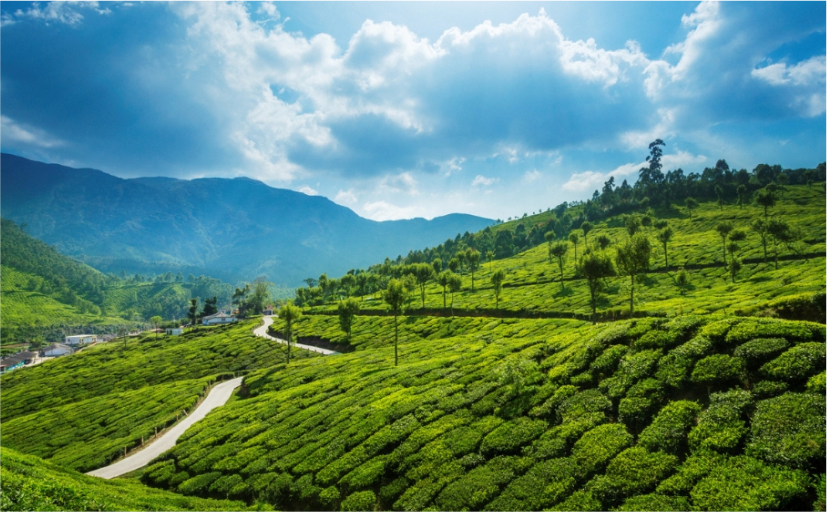
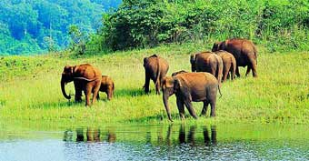
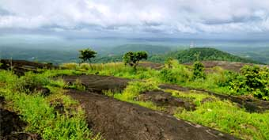

IDUKKI
To the humankind lost in the concrete jungle, Idukki tourist places acquaints them with the splendor of nature and God’s magnificent creation. Idukki, one of the quaintest districts of Kerala, is home to a number of prominent tourist places.
The district, which lies in the Western Ghats of Kerala, is topographically known for its rocky terrain and varied verdant vegetation. Places in Idukki is full of cliffs, lush greenery, lagoons, tranquil rivers and cascading waterfalls that hypnotize the tourists and leave them with everlasting memories. Having names of Painavu, arch dam, poonchira, Idukki shows a variety in its attractions.
Idukki Dam
The Idukki dam is constructed across the Periyar River, in a valley between the Kuravan and Kurathi hills in Kerala. The dam stands at 167.68 meters, is one of the highest arch dams in Asia. The dam is constructed by the Kerala government in 1975 and supports 780 MW hydroelectric power station.The sheer magnitude of the structure along with the mountains, verdant vegetation, and 60 sq. km placid lake, which is created by the 3 dams, Idukki dam, Cheruthoni and Kulamavu, captivate the visitors.

Munnar
Munnar, the famed hill station of south India, is a romantic locale where natural beauty is everywhere to visit, explore and to enjoy. Munnar is situated at the confluence of three mountain streams – Muthirapuzha, Nallathanni and Kundala. Virgin forests, savannah, rolling hills, scenic valleys, numerous streams, huge splashy waterfalls, sprawling tea plantations and winding walkways are all part of the great holiday experience on offer for a traveler to Munnar.

Thekkadi
Thekkady in Kerala State, India's largest wildlife sanctuary is a dream destination for any tourist visiting India. The 120 years old 'Surki' dam built across Peryiar, Poorna in Vedic parlance, is a major tourist attraction. The Country's sole Tiger reserve, Thekkady, with its bountiful treasures of tropical flora and fauna is the ultimate reservoir of many an endangered species and a rich tribal culture. Thekkady is a pleasant heaven on earth for those who love nature in its wild manifestations.

Vagamon
Vagamon is a hill station located in Kottayam- Idukki border of Kerala. It has a cool climate with the temperature between 10-23°C during a summer midday. It is situated 1,100 metres above sea level. With a never-ending line of lush green hills, breathtaking ravines and meandering rivulets. A perfect tourist place situated 1200 meters above the sea level spot surrounded by the greenery of tea gardens , Fresh cool air, murmuring Pine forest ,small waterfalls inviting you to vagamon.